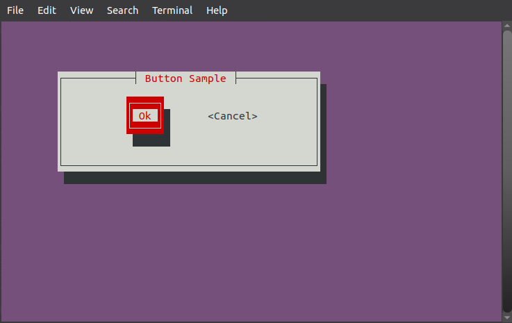
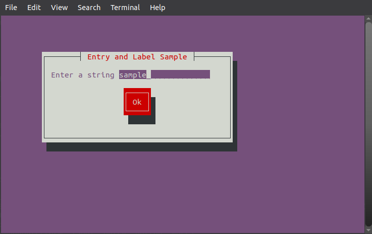
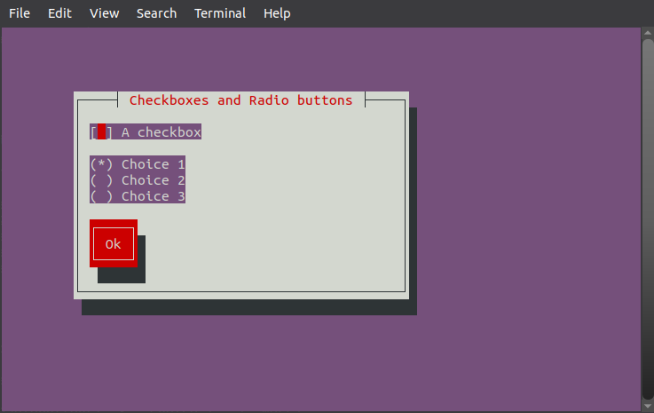
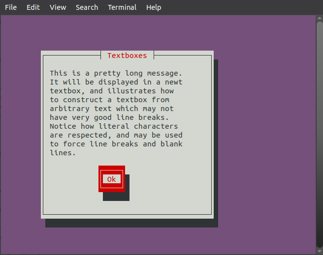

| Prev | Home |
Table of Contents
Components are the basic user interface element newt provides. A single component may be (for example) a listbox, push button checkbox, a collection of other components. Most components are used to display information in a window, provide a place for the user to enter data, or a combination of these two functions. provides. A single component may be (for example) a listbox, push button checkbox, a collection of other components. Most components are used to display information in a window, provide a place for the user to enter data, or a combination of these two functions.
Forms, however, are a component whose primary purpose is not noticed by the user at all. Forms are collections of components (a form may contain another form) which logically relate the components to one another. Once a form is created and had all of its constituent components added to it, applications normally then run the form. This gives control of the application to the form, which then lets the user enter data onto the form. When the user is done (a number of different events qualify as ``done''), the form returns control to the part of the application which invoked it. The application may then read the information the user provided and continue appropriately.
All newt components are stored in a common data type, a newtComponent (some of the particulars of newtComponents have already been mentioned). While this makes it easy for programmers to pass components around, it does force them to make sure they don't pass entry boxes to routines expecting push buttons, as the compiler can't ensure that for them.
We start off with a brief introduction to forms. While not terribly complete, this introduction is enough to let us illustrate the rest of the components with some sample code. We'll then discuss the remainder of the components, and end this section with a more exhaustive description of forms. components are stored in a common data type, anewtComponent(some of the particulars ofnewtComponent
As we've mentioned, forms are simply collections of components. As only one form can be active (or running) at a time, every component which the user should be able to access must be on the running form (or on a subform of the running form). A form is itself a component, which means forms are stored in newtComponent data structures.
declare function newtForm(byval vertBar as newtComponent, byval helpTag as any ptr, byval flags as long) as newtComponentTo create a form, call newtForm(). The first parameter is a vertical scrollbar which should be associated with the form. For now, that should always be NULL (we'll discuss how to create scrolling forms later in this section). The second parameter, help, is currently unused and should always be NULL. The flags is normally 0, and other values it can take will be discussed later. Now that we've waved away the complexity of this function, creating a form boils down to simply:
dim myForm as newtComponent myForm = newtForm(NULL, NULL, 0)After a form is created, components need to be added to it --- after all, an empty form isn't terribly useful. There are two functions which add components to a form.
declare sub newtFormAddComponent(byval form as newtComponent, byval co as newtComponent) declare sub newtFormAddComponents(byval form as newtComponent, ...)The first function, newtFormAddComponent(), adds a single component to the form which is passed as the first parameter. The second function is simply a convenience function. After passing the form to newtFormAddComponents(), an arbitrary number of components is then passed, followed by NULL. Every component passed is added to the form. Once a form has been created and components have been added to it, it's time to run the form.
declare function newtRunForm(byval form as newtComponent) as newtComponentThis function runs the form passed to it, and returns the component which caused the form to stop running. For now, we'll ignore the return value completely. Notice that this function doesn't fit in with newt's normal naming convention. It is an older interface which will not work for all forms. It was left in newt only for legacy applications. It is a simpler interface than the new newtFormRun() though, and is still used quite often as a result. When an application is done with a form, it destroys the form and all of the components the form contains.
declare sub newtFormDestroy(byval form as newtComponent)This function frees the memory resources used by the form and all of the components which have been added to the form (including those components which are on subforms). Once a form has been destroyed, none of the form's components can be used.
Non-form components are the most important user-interface component for users. They determine how users interact with newt and how information is presented to them.and how information is presented to them.
There are a couple of functions which work on more then one type of components. The description of each component indicates which (if any) of these functions are valid for that particular component.
type newtCallback as sub(byval as newtComponent, byval as any ptr) declare sub newtComponentAddCallback(byval co as newtComponent, byval f as newtCallback, byval data as any ptr) declare sub newtComponentTakesFocus(byval co as newtComponent, byval val as long)The first registers a callback function for that component. A callback function is a function the application provides which calls for a particular component. Exactly when (if ever) the callback is invoked depends on the type of component the callback is attached to, and will be discussed for the components which support callbacks.
newtComponentTakesFocus() works on all components. It allows the application to change which components the user is allowed to select as the current component, and hence provide input to.
Components which do not take focus are skipped over during form traversal, but they are displayed on the terminal.
Some components should never be set to take focus, such as those which display static text.
Nearly all forms contain at least one button. Newt buttons come in two flavors, full buttons and compact buttons. Full buttons take up quit a bit of screen space, but look much better then the single-row compact buttons. Other then their size, both button styles behave identically. Different functions are used to create the two types of buttons.
declare function newtButton(byval left as long, byval top as long, byval text as const zstring ptr) as newtComponent declare function newtCompactButton(byval left as long, byval top as long, byval text as const zstring ptr) as newtComponentBoth functions take identical parameters. The first two parameters are the location of the upper left corner of the button, and the final parameter is the text which should be displayed in the button (such as ``Ok'' or ``Cancel'').
Example:
#Ifndef NULL #Define NULL 0 #Endif #inclib "newt" #include "newt.bi" dim button as newtComponent dim form as newtComponent newtInit() newtCls() button = newtButton(0, 0, "Exit") form = newtForm(NULL, NULL, 0) newtFormAddComponents(form, button, NULL) newtRunForm(form) newtFinished() newtFormDestroy(form)
Example:
#Ifndef NULL
#Define NULL 0
#Endif
#inclib "newt"
#include "newt.bi"
dim form as newtComponent
dim b1 as newtComponent
dim b2 as newtComponent
newtInit()
newtCls()
newtOpenWindow(10, 5, 40, 6, "Button Sample")
b1 = newtButton(10, 1, "Ok")
b2 = newtCompactButton(22, 2, "Cancel")
form = newtForm(NULL, NULL, 0)
newtFormAddComponents(form, b1, b2, NULL)
newtRunForm(form)
newtFormDestroy(form)
newtFinished()
Screenshot

Labels are newt's simplest component. They display some given text and don't allow any user input.
declare function newtLabel(byval left as long, byval top as long, byval text as const zstring ptr) as newtComponent declare sub newtLabelSetText(byval co as newtComponent, byval text as const zstring ptr)Creating a label is just like creating a button; just pass the location of the label and the text it should display.
Unlike buttons, labels do let the application change the text in the label with newtLabelSetText.
When the label's text is changed, the label automatically redraws itself. It does not clear out any old text which may be leftover from the previous time is was displayed, however, so be sure that the new text is at least as long as the old text.
Entry boxes allow the user to enter a text string into the form which the application can later retrieve.
type newtEntryFilter as function(byval entry as newtComponent, byval data as any ptr, byval ch as long, byval cursor as long) as long
declare function newtEntry(byval left as long, byval top as long, byval initialValue as const zstring ptr, byval width as long,_
byval resultPtr as const zstring ptr ptr, byval flags as long) as newtComponent
declare sub newtEntrySet(byval co as newtComponent, byval value as const zstring ptr, byval cursorAtEnd as long)
declare sub newtEntrySetFilter(byval co as newtComponent, byval filter as newtEntryFilter, byval data as any ptr)
declare function newtEntryGetValue(byval co as newtComponent) as zstring ptrnewtEntry() creates a new entry box. After the location of the entry box, the initial value for the entry box is passed, which may be NULL if the box should start off empty. Next, the width of the physical box is given. This width may or may not limit the length of the string the user is allowed to enter; that depends on the flags.
The resultPtr must be the address of a zstring ptr. Until the entry box is destroyed by newtFormDestroy(), that zstring ptr will point to the current value of the entry box. It's important that applications make a copy of that value before destroying the form if they need to use it later.
The resultPtr may be NULL, in which case the user must use the newtEntryGetValue() function to get the value of the entry box.
Entry boxes support a number of flags:
NEWT_ENTRY_SCROLL
If this flag is not specified, the user cannot enter text into the entry box which is wider then the entry box itself. This flag removes this limitation, and lets the user enter data of an arbitrary length.
If this flag is specified, the value of the entry box is not displayed. This is useful when the application needs to read a password, for example.
When this flag is given, the entry box will cause the form to stop running if the user pressed return inside of the entry box. This can provide a nice shortcut for users.
After the entry box itself, the new string to place in the entry box is passed.
The final parameter, cursorAtEnd, controls where the cursor will appear in the entry box. If it is zero, the cursor remains at its present location; a nonzero value moves the cursor to the end of the entry box's new value.
While the simplest way to find the value of an entry box is by using a resultPtr, doing so complicates some applications. newtEntryGetValue() returns a pointer to the string which the entry box currently contains. The returned pointer may not be valid once the user further modifies the entry box, and will not be valid after the entry box has been destroyed, so be sure to save its value in a more permanent location if necessary.
Entry boxes allow applications to filter characters as they are entered. This allows programs to ignore characters which are invalid (such as entering a ^ in the middle of a phone number) and provide intelligent aids to the user (such as automatically adding a '.' after the user has typed in the first three numbers in an IP address). When a filter is registered through newtEntrySetFilter(), both the filter itself and an arbitrary any ptr, which passed to the filter whenever it is invoked, are recorded. This data pointer isn't used for any other purpose, and may be NULL. Entry filters take four arguments.
The entry box which had data entered into it
The data pointer which was registered along with the filter
The new character which newt is considering inserting into the entry box
The current cursor position (0 is the leftmost position)
Example:
#Ifndef NULL
#Define NULL 0
#Endif
#inclib "newt"
#include "newt.bi"
dim form as newtComponent
dim label as newtComponent
dim entry as newtComponent
dim button as newtComponent
dim entryValue as zstring ptr
newtInit()
newtCls()
newtOpenWindow(10, 5, 40, 8, "Entry and Label Sample")
label = newtLabel(1, 1, "Enter a string")
entry = newtEntry(16, 1, "sample", 20, @entryValue, NEWT_FLAG_SCROLL OR NEWT_FLAG_RETURNEXIT)
button = newtButton(17, 3, "Ok")
form = newtForm(NULL, NULL, 0)
newtFormAddComponents(form, label, entry, button, NULL)
newtRunForm(form)
newtFinished()
print("Final string was: " & *entryValue)
/' We cannot destroy the form until after we've used the value
from the entry widget. '/
newtFormDestroy(form)
Screenshot

Most widget sets include checkboxes which toggle between two value (checked or not checked).
Newt checkboxes are more flexible. When the user presses the space bar on a checkbox, the checkbox's value changes to the next value in an arbitrary sequence (which wraps).
Most checkboxes have two items in that sequence, checked or not, but newt allows an arbitrary number of value. This is useful when the user must pick from a limited number of choices. Each item in the sequence is a single character, and the sequence itself is represented as a string.
The checkbox components displays the character which currently represents its value the left of a text label, and returns the same character as its current value. The default sequence for checkboxes is " *", with ' ' indicating false and '*' true.
declare function newtCheckbox(byval left as long, byval top as long, byval text as const zstring ptr,_
byval defValue as byte, byval seq as const zstring ptr, byval result as zstring ptr) as newtComponent
declare function newtCheckboxGetValue(byval co as newtComponent) as byte
declare sub newtCheckboxSetValue(byval co as newtComponent, byval value as byte)
declare sub newtCheckboxSetFlags(byval co as newtComponent, byval flags as long, byval sense as newtFlagsSense)Like most components, the position of the checkbox is the first thing passed to the function that creates one.
The next parameter, text, is the text which is displayed to the right of the area which is checked.
The defValue is the initial value for the checkbox, and seq is the sequence which the checkbox should go through (defValue must be in seq. seq may be NULL, in which case " *" is used.
The final parameter, result, should point to a character which the checkbox should always record its current value in.
If result is NULL, newtCheckboxGetValue() must be used to get the current value of the checkbox.
newtCheckboxGetValue() is straightforward, returning the character in the sequence which indicates the current value of the checkbox If a callback is attached to a checkbox, the callback is invoked whenever the checkbox responds to a user's keystroke.
The entry box may respond by taking focus or giving up focus, as well as by changing its current value. resultNULL
Radio buttons look very similar to checkboxes. The key difference between the two is that radio buttons are grouped into sets, and exactly one radio button in that set may be turned on. If another radio button is selected, the button which was selected is automatically deselected.
declare function newtRadiobutton(byval left as long, byval top as long, byval text as const zstring ptr,_
byval isDefault as long, byval prevButton as newtComponent) as newtComponent
declare function newtRadioGetCurrent(byval setMember as newtComponent) as newtComponent
declare sub newtRadioSetCurrent(byval setMember as newtComponent)
Each radio button is created by calling newtRadiobutton().
After the position of the radio button, the text displayed with the button is passed.
isDefault should be nonzero if the radio button is to be turned on by default.
The final parameter, prevMember is used to group radio buttons into sets. If prevMember is NULL, the radio button is assigned to a new set. If the radio button should belong to a preexisting set, prevMember must be the previous radio button added to that set.
Discovering which radio button in a set is currently selected necessitates newtRadioGetCurrent().
It may be passed any radio button in the set you're interested in, and it returns the radio button component currently selected.
Example:
#Ifndef NULL
#Define NULL 0
#Endif
#inclib "newt"
#include "newt.bi"
dim form as newtComponent
dim checkbox as newtComponent
dim button as newtComponent
dim rb(0 to 2) as newtComponent
dim cbValue as zstring ptr
dim byteValue as byte = 0
dim i as integer
newtInit()
newtCls()
newtOpenWindow(10, 5, 40, 11, "Checkboxes and Radio buttons")
checkbox = newtCheckbox(1, 1, "A checkbox", byteValue, " *X", @cbValue)
rb(0) = newtRadiobutton(1, 3, "Choice 1", 1, NULL)
rb(1) = newtRadiobutton(1, 4, "Choice 2", 0, rb(0))
rb(2) = newtRadiobutton(1, 5, "Choice 3", 0, rb(1))
button = newtButton(1, 7, "Ok")
form = newtForm(NULL, NULL, 0)
newtFormAddComponent(form, checkbox)
for i = 0 to 2
newtFormAddComponent(form, rb(i))
next
newtFormAddComponent(form, button)
newtRunForm(form)
newtFinished()
/' We cannot destroy the form until after we've found the current
radio button '/
for i = 0 to 2
if newtRadioGetCurrent(rb(0)) = rb(i) then
print("radio button picked: " & i)
end if
next
newtFormDestroy(form)
/' But the checkbox's value is stored locally '/
print("checkbox value: " & cbValue)
Screenshot

It's common for programs to need to display a progress meter on the terminal while it performs some length operation (it behaves like an anesthetic). The scale component is a simple way of doing this. It displays a horizontal bar graph which the application can update as the operation continues.
declare function newtScale(byval left as long, byval top as long, byval width as long, byval fullValue as longint) as newtComponent declare sub newtScaleSet(byval co as newtComponent, byval amount as ulongint)When the scale is created with newtScale, it is given the width of the scale itself as well as the value which means that the scale should be drawn as full.
Textboxes display a block of text on the terminal, and is appropriate for display large amounts of text.
declare function newtTextbox(byval left as long, byval top as long, byval width as long, byval height as long, byval flags as long) as newtComponent declare sub newtTextboxSetText(byval co as newtComponent, byval text as const zstring ptr) declare sub newtTextboxSetHeight(byval co as newtComponent, byval height as long)newtTextbox() creates a new textbox, but does not fill it with data. The function is passed the location for the textbox on the screen, the width and height of the textbox (in characters), and zero or more of the following flags:
All text in the textbox should be wrapped to fit the width of the textbox. If this flag is not specified, each newline delimited line in the text is truncated if it is too long to fit. When newt wraps text, it tries not to break lines on spaces or tabs. Literal newline characters are respected, and may be used to force line breaks.
The text box should be scrollable. When this option is used, the scrollbar which is added increases the width of the area used by the textbox by 2 characters; that is the textbox is 2 characters wider then the width passed to newtTextbox().
After a textbox has been created, text may be added to it through newtTextboxSetText(), which takes only the textbox and the new text as parameters. If the textbox already contained text, that text is replaced by the new text. The textbox makes its own copy of the passed text, so these is no need to keep the original around unless it's convenient.
When applications need to display large amounts of text, it's common not to know exactly where the linebreaks should go.
While textboxes are quite willing to scroll the text, the programmer still must know what width the text will look ``best'' at (where ``best'' means most exactly rectangular; no lines much shorter or much longer then the rest).
This common is especially prevalent in internationalized programs, which need to make a wide variety of message string look god on a screen.
To help with this, newt provides routines to reformat text to look good.
It tries different widths to figure out which one will look ``best'' to the user.
As these commons are almost always used to format text for textbox components, newt makes it easy to construct a textbox with reflowed text.
declare function newtReflowText(byval text as zstring ptr, byval width as long, byval flexDown as long, byval flexUp as long,_
byval actualWidth as long ptr, byval actualHeight as long ptr) as zstring ptr
declare function newtTextboxReflowed(byval left as long, byval top as long, byval text as zstring ptr, byval width as long,_
byval flexDown as long, byval flexUp as long, byval flags as long) as newtComponent
declare function newtTextboxGetNumLines(byval co as newtComponent) as longnewtReflowText() reflows the text to a target width of width.
The actual width of the longest line in the returned string is between width - flexDown and width + flexUp; the actual maximum line length is chosen to make the displayed check look rectangular.
The ints pointed to by actualWidth and actualHeight are set to the width of the longest line and the number of lines in in the returned text, respectively. Either one may be NULL.
The return value points to the reflowed text, and is allocated through malloc().
When the reflowed text is being placed in a textbox it may be easier to use newtTextboxReflowed(), which creates a textbox, reflows the text, and places the reflowed text in the listbox.
It's parameters consist of the position of the final textbox, the width and flex values for the text (which are identical to the parameters passed to newtReflowText(), and the flags for the textbox (which are the same as the flags for newtTextbox().
This function does not let you limit the height of the textbox, however, making limiting it's use to constructing textboxes which don't need to scroll.
To find out how tall the textbox created by newtTextboxReflowed() is, use newtTextboxGetNumLines(), which returns the number of lines in the textbox.
For textboxes created by newtTextboxReflowed(), this is always the same as the height of the textbox.
Example:
#Ifndef NULL
#Define NULL 0
#Endif
#inclib "newt"
#include "newt.bi"
dim form as newtComponent
dim text as newtComponent
dim button as newtComponent
dim txt as string
txt = "This is a pretty long message. It will be displayed in a newt textbox, and illustrates how to construct a textbox from arbitrary text which may not have very good line breaks. Notice how literal characters are respected, and may be used to force line breaks and blank lines."
newtInit()
newtCls()
text = newtTextboxReflowed(1, 1, StrPtr(txt), 30, 5, 5, 0)
button = newtButton(12, newtTextboxGetNumLines(text) + 2, "Ok")
newtOpenWindow(10, 5, 37, newtTextboxGetNumLines(text) + 7, "Textboxes")
form = newtForm(NULL, NULL, 0)
newtFormAddComponents(form, text, button, NULL)
newtRunForm(form)
newtFormDestroy(form)
newtFinished()
Screenshot

Scrollbars (which, currently, are always vertical in newt), may be attached to forms to let them contain more data then they have space for.
While the actual process of making scrolling forms is discussed at the end of this section, we'll go ahead and introduce scrollbars now so you'll be ready.
declare function newtVerticalScrollbar(byval left as long, byval top as long, byval height as long, byval normalColorset as long,_
byval thumbColorset as long) as newtComponentWhen a scrollbar is created, it is given a position on the screen, a height, and two colors.
The first color is the color used for drawing the scrollbar, and the second color is used for drawing the thumb.
This is the only place in newt where an application specifically sets colors for a component.
It's done here to let the colors a scrollbar use match the colors of the component the scrollbar is mated too.
When a scrollbar is being used with a form, normalColorset is often NEWT_COLORSET_WINDOW and thumbColorset NEWT_COLORSET_ACTCHECKBOX.
Of course, feel free to peruse <newt.bi> and pick your own colors.
As the scrollbar is normally updated by the component it is mated with, there is no public interface for moving the thumb.
Listboxes are the most complicated components newt provides.
They can allow a single selection or multiple selection, and are easy to update.
Unfortunately, their API is also the least consistent of newt's components.
Each entry in a listbox is a ordered pair of the text which should be displayed for that item and a key, which is a any ptr that uniquely identifies that listbox item.
Many applications pass integers in as keys, but using arbitrary pointers makes many applications significantly easier to code.
Let's start off by looking at the most important listbox functions.
declare function newtListbox(byval left as long, byval top as long, byval height as long, byval flags as long) as newtComponent declare function newtListboxAppendEntry(byval co as newtComponent, byval text as const zstring ptr, byval data as const any ptr) as long declare function newtListboxGetCurrent(byval co as newtComponent) as any ptr declare sub newtListboxSetWidth(byval co as newtComponent, byval width as long) declare sub newtListboxSetCurrent(byval co as newtComponent, byval num as long) declare sub newtListboxSetCurrentByKey(byval co as newtComponent, byval key as any ptr)
A listbox is created at a certain position and a given height. The height is used for two things. First of all, it is the minimum height the listbox will use. If there are less items in the listbox then the height, suggests the listbox will still take up that minimum amount of space. Secondly, if the listbox is set to be scrollable (by setting the , the is also the maximum height of the listbox. If the listbox may not scroll, it increases its height to display all of its items. The following flags may be used when creating a listbox: is also the maximum height of the listbox. If the listbox may not scroll, it increases its height to display all of its items. The following flags may be used when creating a listbox:
NEWT_FLAG_SCROLL
The listbox should scroll to display all of the items it contains.
When the user presses return on an item in the list, the form should return.
A frame is drawn around the listbox, which can make it easier to see which listbox has the focus when a form contains multiple listboxes.
By default, a listbox only lets the user select one item in the list at a time. When this flag is specified, they may select multiple items from the list.
Once a listbox has been created, items are added to it by invoking newtListboxAppendEntry(), which adds new items to the end of the list.
In addition to the listbox component, newtListboxAppendEntry() needs both elements of the (text, key) ordered pair.
For lists which only allow a single selection, newtListboxGetCurrent() should be used to find out which listbox item is currently selected.
It returns the key of the currently selected item. Normally, a listbox is as wide as its widest element, plus space for a scrollbar if the listbox is supposed to have one.
To make the listbox any larger then that, use newtListboxSetWidth(), which overrides the natural list of the listbox.
Once the width has been set, it's fixed. The listbox will no longer grow to accommodate new entries, so bad things may happen!
An application can change the current position of the listbox (where the selection bar is displayed) by calling newtListboxSetCurrent() or newtListboxSetCurrentByKey().
The first sets the current position to the entry number which is passed as the second argument, with 0 indicating the first entry.
newtListboxSetCurrentByKey() sets the current position to the entry whose key is passed into the function.
While the contents of many listboxes never need to change, some applications need to change the contents of listboxes regularly.
Newt includes complete support for updating listboxes.
These new functions are in addition to newtListboxAppendEntry(), which was already discussed.
declare sub newtListboxSetEntry(byval co as newtComponent, byval num as long, byval text as const zstring ptr)
declare function newtListboxAppendEntry(byval co as newtComponent, byval text as const zstring ptr, byval data as const any ptr) as long
declare function newtListboxAddEntry alias "newtListboxAppendEntry"(byval co as newtComponent, byval text as const zstring ptr,_
byval data as const any ptr) as long
declare function newtListboxInsertEntry(byval co as newtComponent, byval text as const zstring ptr, byval data as const any ptr,_
byval key as any ptr) as long
declare function newtListboxDeleteEntry(byval co as newtComponent, byval data as any ptr) as long
declare sub newtListboxClear(byval co as newtComponent)
The first of these, newtListboxSetEntry(), updates the text for a key which is already in the listbox.
The key specifies which listbox entry should be modified, and text becomes the new text for that entry in the listbox.
newtListboxInsertEntry() inserts a new listbox entry after an already existing entry, which is specified by the key parameter.
The text and data parameters specify the new entry which should be added.
Already-existing entries are removed from a listbox with newtListboxDeleteEntry(). It removes the listbox entry with the specified key.
If you want to remove all of the entries from a listbox, use newtListboxClear().
When a listbox is created with NEWT_FLAG_MULTIPLE, the user can select multiple items from the list.
When this option is used, a different set of functions must be used to manipulate the listbox selection.
declare sub newtListboxClearSelection(byval co as newtComponent) declare function newtListboxGetSelection(byval co as newtComponent, byval numitems as long ptr) as any ptr ptr declare sub newtListboxSelectItem(byval co as newtComponent, byval key as const any ptr, byval sense as newtFlagsSense) declare function newtListboxItemCount(byval co as newtComponent) as long
The simplest of these is newtListboxClearSelection(), which deselects all of the items in the list (listboxes which allow multiple selections also allow zero selections).
newtListboxGetSelection() returns a pointer to an array which contains the keys for all of the items in the listbox currently selected.
The int pointed to by numitems is set to the number of items currently selected (and hence the number of items in the returned array).
The returned array is dynamically allocated, and must be released through free().
newtListboxSelectItem() lets the program select and deselect specific listbox entries.
The key of the listbox entry is being affected is passed, and sense is one of NEWT_FLAGS_RESET, which deselects the entry, NEWT_FLAGS_SET, which selects the entry, or NEWT_FLAGS_TOGGLE, which reverses the current selection status.
Forms, which tie components together, are quite important in the world of newt. is one ofNEWT_FLAGS_RESET , which reverses the current selection status.
While we've already discussed the basics of forms, we've omitted many of the details.
Forms return control to the application for a number of reasons:
A component can force the form to exit. Buttons do this whenever they are pushed, and other components exit when NEWT_FLAG_RETURNEXIT has been specified.
Applications can setup hot keys which cause the form to exit when they are pressed.
Newt can exit when file descriptors are ready to be read or ready to be written to.
declare sub newtFormAddHotKey(byval co as newtComponent, byval key as long) declare sub newtFormWatchFd(byval form as newtComponent, byval fd as long, byval fdFlags as long)
declare sub newtDrawForm(byval form as newtComponent) declare function newtFormGetCurrent(byval co as newtComponent) as newtComponent declare sub newtFormSetCurrent(byval co as newtComponent, byval subco as newtComponent) declare sub newtFormRun(byval co as newtComponent, byval es as newtExitStruct ptr)
declare function newtForm(byval vertBar as newtComponent, byval helpTag as any ptr, byval flags as long) as newtComponent declare sub newtFormSetBackground(byval co as newtComponent, byval color as long) declare sub newtFormSetHeight(byval co as newtComponent, byval height as long) declare sub newtFormSetWidth(byval co as newtComponent, byval width as long)
Example submitting a form:
/' This file was written by Angelo Rosina aka angros47 '/
#Ifndef NULL
#Define NULL 0
#Endif
#inclib "newt"
#include "newt.bi"
dim form as newtComponent
dim b1 as newtComponent
dim b2 as newtComponent
dim p as newtComponent
sub fCallback()
newtCls()
newtDrawRootText(0, 0, strptr("I am in callback!"))
newtRefresh()
end sub
newtInit()
newtCls()
newtOpenWindow(10, 5, 40, 6, "Button Sample")
b1 = newtButton(10, 1, "Ok")
b2 = newtCompactButton(22, 2, "Cancel")
form = newtForm(NULL, NULL, 0)
newtFormAddComponents(form, b1, b2, NULL)
p=newtRunForm(form)
if p=b1 then fCallback()
sleep
newtFormDestroy(form)
newtFinished()| Prev | Home |